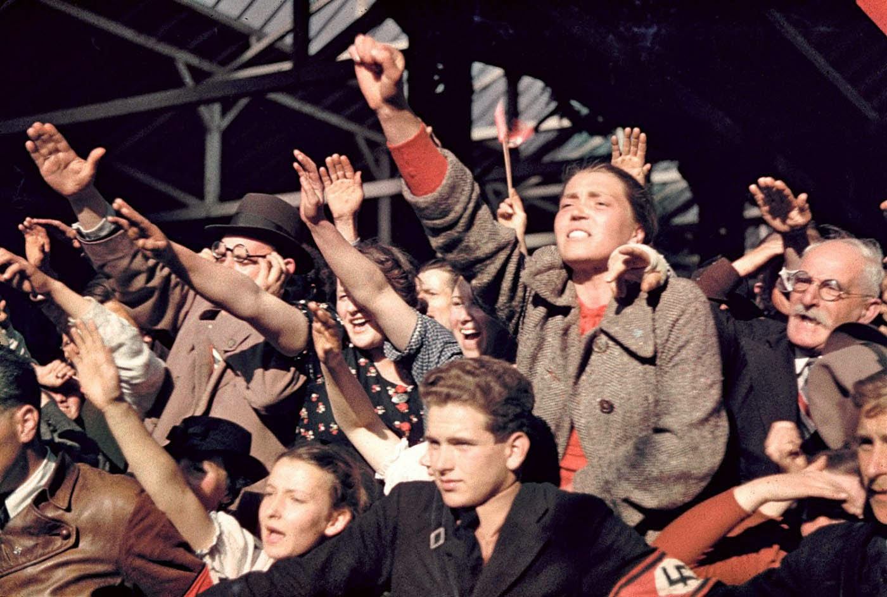
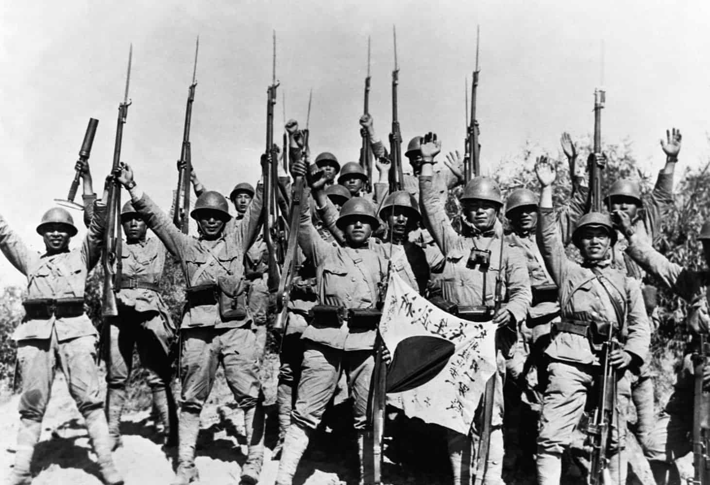
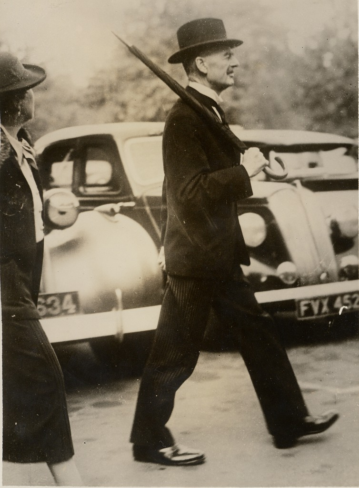
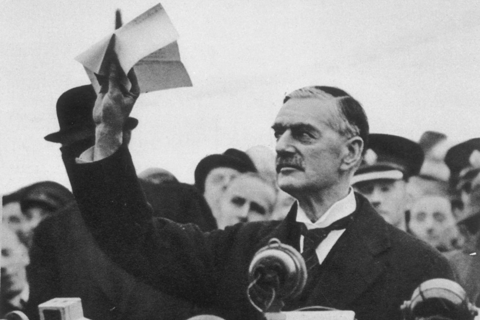
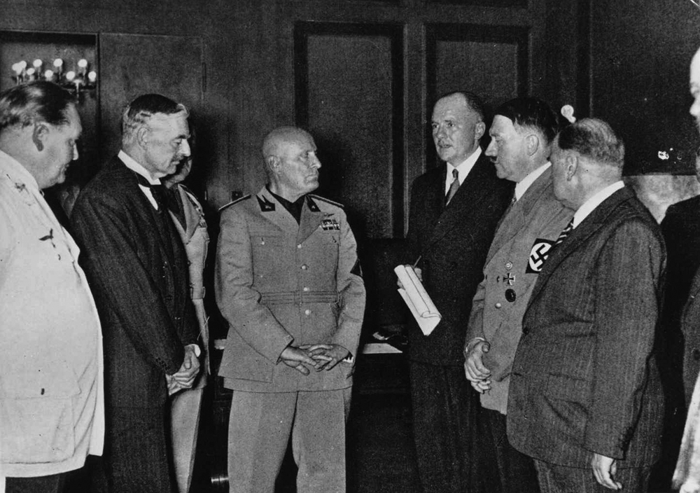
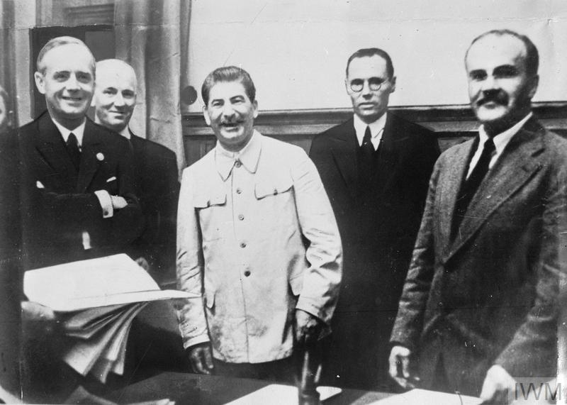
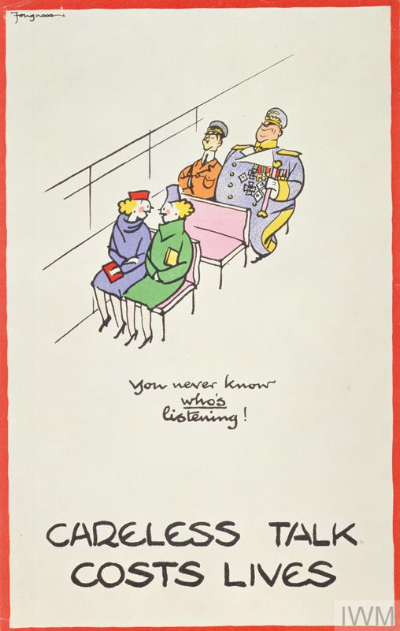
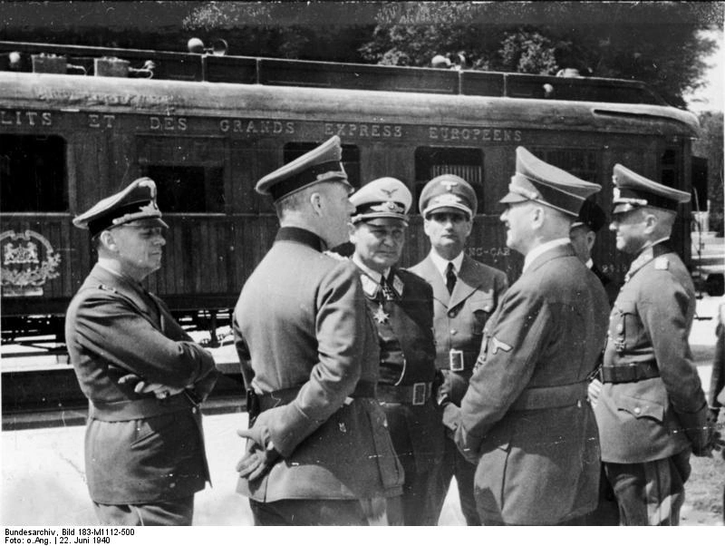
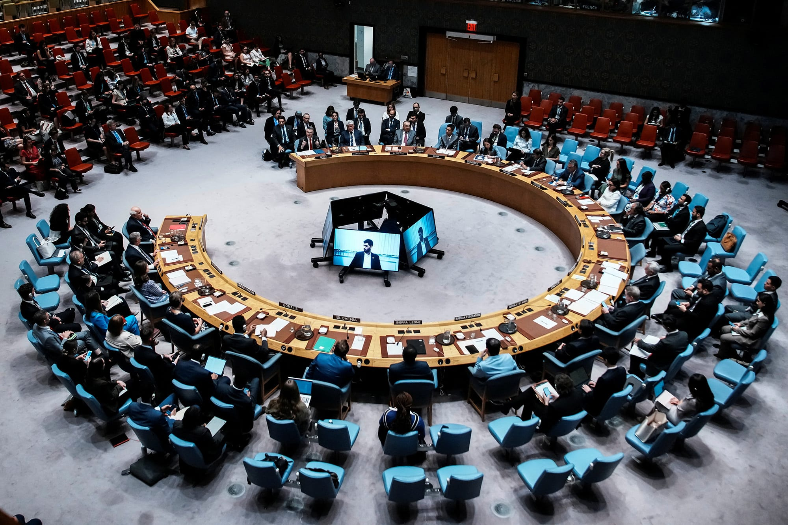

ESSENTIAL QUESTIONHow did the world let Hitler build an empire before anyone stopped him?
INTRODUCTION
On September 1, 1939, twelve-year-old Janina Bauman was eating breakfast in Warsaw, Poland, when she heard a sound she did not recognize: bombs. The German air force had begun bombing the city before dawn. Within hours, tanks crossed the Polish border. Janina grabbed her little sister's hand and ran to the basement.
On September 1, 1939, Janina Bauman was eating breakfast in Warsaw. She was twelve years old. Then she heard bombs. German planes were attacking the city. Tanks crossed into Poland. Janina grabbed her little sister and ran to the basement.
World War II did not start by accident. It built up slowly over an entire decade. Germany, Italy, and Japan took land by force while other countries hoped the violence would stop. By the time Britain and France acted, the war machine was already moving.
World War II did not start by accident. It built up over many years. Germany, Italy, and Japan took land by force. Other countries hoped they would stop. By the time Britain and France acted, war had begun.
CHAPTER ONE
THREE AGGRESSORS: GERMANY, ITALY, AND JAPAN ON THE MOVE
By the early 1930s, three countries were building empireLand and people controlled by one powerful country.s through military force. Germany, Italy, and Japan had different goals, but they shared one belief: their nation deserved more land, resources, and power.
By the early 1930s, three countries wanted empires. Germany, Italy, and Japan used military force. They wanted more land, resources, and power. They believed other countries should move out of the way.

German crowds cheering Adolf Hitler, mid-1930s. Bundesarchiv / Wikimedia Commons.
Germany under Adolf Hitler moved first in Europe. After taking power in 1933, Hitler rebuilt Germany's military in violation of the Treaty of Versailles. In 1936, he sent troops into the Rhineland, an area that was supposed to remain demilitarized. Britain and France did nothing. Hitler learned that the democracies would not fight back.
Germany moved first in Europe. Hitler took power in 1933. He rebuilt Germany's military, even though the Treaty of Versailles banned it. In 1936, he sent troops into the Rhineland. Britain and France did nothing. Hitler learned he could push further.
In Asia, Japan had been expanding since 1931. Japan invaded Manchuria, a region of China, and turned it into a puppet state. In 1937, Japan launched a full war against China. During the capture of Nanking, Japanese soldiers killed huge numbers of Chinese civilians and prisoners of war.
Japan was also expanding. In 1931, Japan invaded Manchuria in China. It made the area a puppet state. In 1937, Japan began a full war against China. In Nanking, Japanese soldiers killed many civilians and prisoners.
Country
Leader
What They Wanted
What They Did
Germany
Adolf Hitler
Land in Europe and power after WWI
Rearmed, occupied the Rhineland, annexed Austria, seized Czechoslovakia
Italy
Benito Mussolini
A new Roman Empire
Invaded Ethiopia and Albania
Japan
Military leaders
Control over East Asia and resources
Invaded Manchuria and China
Germany, Italy, and Japan became known as the Axis powersGermany, Italy, and Japan during World War II.. Their alliance created a threat across Europe, Africa, Asia, and the Pacific. The world was no longer facing one crisis. It was facing several connected crises at once.
Germany, Italy, and Japan became the Axis powers. Their alliance created danger in Europe, Africa, Asia, and the Pacific. The world was not facing one crisis. It was facing many connected crises.

Japanese troops advancing toward Nanking, China, December 1937. Wikimedia Commons.
Italy's aggressionUsing military force to attack another country first. showed how weak the international response had become. Mussolini invaded Ethiopia in 1935 and used chemical weapons. The League of Nations condemned Italy, but its punishments were too weak to stop the invasion.
Italy's aggression showed a major problem. Mussolini invaded Ethiopia in 1935. His army used chemical weapons. The League of Nations condemned Italy, but it did not stop the invasion.
DID YOU KNOW

Chamberlain's umbrella became part of his public image.
Neville Chamberlain was so closely linked to his umbrella that cartoonists used it as a shortcut for his whole personality: cautious, proper, and convinced that paperwork could hold back violence. The strange detail is that the umbrella became political theater. People were not just watching a prime minister negotiate with Hitler; they were watching a symbol of calm manners walk into a world that no longer respected manners.
FAST FACTS
1931JAPAN TAKES MANCHURIA
1935ITALY INVADES ETHIOPIA
1938MUNICH AGREEMENT
6MONTHS UNTIL BETRAYAL
28DAYS TO CRUSH POLAND
CHAPTER TWO
THE APPEASEMENT TRAP: GIVING HITLER WHAT HE WANTED

Neville Chamberlain holds the Munich Agreement, September 30, 1938. Wikimedia Commons.
Britain and France feared another world war. World War I had killed millions and left deep trauma. Their leaders chose appeasementGiving in to an aggressor to avoid war.: give Hitler some of what he wanted and hope he would stop.
Britain and France feared another world war. World War I had killed millions. Their leaders chose appeasement. They gave Hitler some demands and hoped he would stop.
The clearest example came in 1938. Hitler demanded the Sudetenland, a region of Czechoslovakia with many German-speaking people. Czechoslovakia refused to surrender it. Britain and France were supposed to support Czechoslovakia, but they negotiated with Hitler instead.
In 1938, Hitler demanded the Sudetenland. It was part of Czechoslovakia. Czechoslovakia refused. Britain and France were supposed to help Czechoslovakia. Instead, they negotiated with Hitler.
At the Munich Conference, Britain and France gave Hitler the Sudetenland. Czechoslovakia was not even allowed in the room. Hitler promised it was his last territorial demand. Chamberlain returned home and said the agreement meant "peace for our time."
At the Munich Conference, Britain and France gave Hitler the Sudetenland. Czechoslovakia was not invited. Hitler promised he wanted no more land. Chamberlain came home and said it meant "peace for our time."
Winston Churchill disagreed. He warned that giving Hitler land would not stop him. In March 1939, Hitler proved Churchill right by taking the rest of Czechoslovakia. Appeasement had not prevented war. It had given Hitler more strength.
Winston Churchill disagreed. He warned that Hitler would not stop. In March 1939, Hitler took the rest of Czechoslovakia. Appeasement did not prevent war. It made Hitler stronger.

Hitler, Mussolini, Chamberlain, and Daladier at the Munich Conference, 1938. Bundesarchiv / Wikimedia Commons.
CHAPTER THREE
THE STALIN-HITLER PACT: THE DEAL THAT SHOCKED THE WORLD
Many people expected the Soviet Union to oppose Nazi Germany. Hitler and Stalin hated each other's political systems. Fascism and communism were supposed to be enemies. Then, on August 23, 1939, Germany and the Soviet Union shocked the world by signing a non-aggression pact.
Many people expected the Soviet Union to oppose Nazi Germany. Hitler and Stalin hated each other's systems. Fascism and communism were enemies. Then Germany and the Soviet Union signed a pact in August 1939.

Molotov signs the Nazi-Soviet Pact as Stalin and Ribbentrop look on, August 23, 1939. Wikimedia Commons.
The pact said Germany and the Soviet Union would not attack each other. But a secret part of the agreement divided Eastern Europe between them. Poland would be split in half. The Baltic states would fall under Soviet control.
The pact said Germany and the Soviet Union would not attack each other. But it also had a secret deal. They planned to divide Eastern Europe. Poland would be split in half.
Stalin wanted time to rebuild his army. Hitler wanted to avoid fighting on two fronts at once. The pact cleared the way for Hitler's invasion of Poland. Eight days later, Germany attacked from the west. Sixteen days after that, the Soviet Union attacked from the east.
Stalin wanted time to rebuild his army. Hitler wanted to avoid a two-front war. The pact cleared the way for the invasion of Poland. Germany attacked from the west. The Soviet Union attacked from the east.
American isolationismAvoiding involvement in other countries' wars. remained strong in 1939. Many Americans remembered World War I and did not want another European war. Congress had passed Neutrality Acts to limit American involvement. The United States watched as Europe went to war.
American isolationism was strong in 1939. Many Americans remembered World War I. They did not want another European war. Congress passed laws to limit involvement. The U.S. watched from a distance.
German forces advance into Poland, September 1939. Bundesarchiv / Wikimedia Commons.
ART SPOTLIGHT

WORLD WAR II PROPAGANDA POSTER, BRITAIN, 1939-1940. WIKIMEDIA COMMONS.
The first months of war were not only fought with tanks and bombers. Governments also fought for attention, secrecy, fear, and morale. A poster like this turned an ordinary habit, talking too much, into something that could feel as dangerous as helping the enemy.
CHAPTER FOUR
THE WAR BEGINS: FROM POLAND TO GLOBAL CONFLICT
Two days after Germany invaded Poland, Britain and France declared war on Germany. World War II had officially begun. But declaring war did not save Poland. German forces moved faster than anyone expected.
Two days after Germany invaded Poland, Britain and France declared war. World War II had begun. But declaring war did not save Poland. German forces moved very fast.
SEPT. 1, 1939
Germany invades Poland using Blitzkrieg: tanks, aircraft, and infantry moving at overwhelming speed.
SEPT. 3, 1939
Britain and France declare war on Germany.
SEPT. 17, 1939
The Soviet Union invades Poland from the east.
SEPT. 27, 1939
Warsaw surrenders. Poland is divided between Germany and the Soviet Union.
APRIL-JUNE 1940
Germany conquers Denmark, Norway, Belgium, the Netherlands, and France.
Warsaw after German bombing, September 1939. Wikimedia Commons.

French armistice signing at Compiègne, June 22, 1940. Bundesarchiv / Wikimedia Commons.
Hitler chose the French surrender site carefully. It was the same railway car and the same forest clearing where Germany had surrendered in 1918. He wanted to reverse the shame of World War I in a single symbolic moment.
Hitler chose the French surrender site on purpose. It was the same railway car where Germany surrendered in 1918. He wanted revenge for World War I. The location was part of the message.
Britain now stood almost alone. Churchill replaced years of denial with a blunt warning: the struggle would be long and painful. The war that leaders had tried to avoid had arrived anyway.
Britain now stood almost alone. Churchill warned that the fight would be long and painful. Leaders had tried to avoid war. War came anyway.
PRIMARY SOURCE
PRIMARY SOURCE MOMENT
PRIMARY SOURCE
"You were given the choice between war and dishonour. You chose dishonour, and you will have war."
Winston Churchill, speech in the House of Commons, October 1938
Churchill said Britain had avoided a fight at Munich, but had only made the coming war harder to stop.
1. What does Churchill mean when he says Britain chose dishonor?
2. How does this source help answer the essential question about how Hitler built an empire before anyone stopped him?
THEN AND NOW
WHEN POWERFUL COUNTRIES TAKE LAND BY FORCE, DELAY CAN BECOME A DECISION.
1938
Chamberlain returns with the Munich Agreement in 1938.
TODAY

World leaders respond to modern territorial aggression.
The rooms have changed, but the faces still carry the same pressure: everyone wants peace, but no one wants to be the person who waited too long.